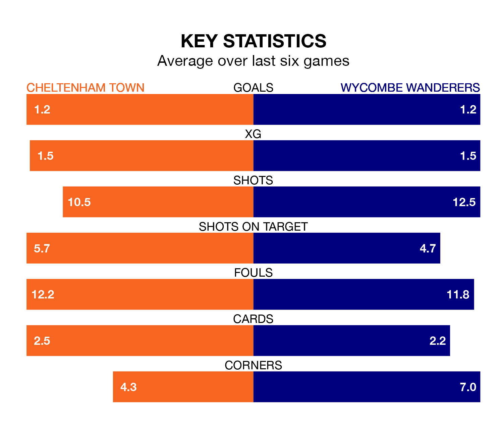

Cheltenham Town host Wycombe Wanderers on Saturday at the Completely-Suzuki Stadium in EFL League One.
In their last league match, on January 27, Cheltenham lost to Derby County 2-1 away, with their goal scored by Liam Sercombe.
Wycombe drew, 2-2 at home against Fleetwood Town, with Garath McCleary and Richard Kone on the scoresheet.
Cheltenham are 22nd in the table after 27 games, of which they have won six and drawn five, earning 23 points.
Wycombe are three places ahead of Town in 19th, with seven wins and 10 draws putting them on 31 points.
In the last 10 years, Cheltenham and Wycombe have played each other on eight occasions. Cheltenham won two of them, Wycombe three, and they drew three times.
On average, the Robins scored 2.0 goals and the Chairboys 2.1 in those matches.
Their last meeting was on April 29, when Cheltenham won 3-0 away.
With 20 goals in 27 games so far this season, the Robins are the league's joint-second-lowest scorers with 0.7 goals per game. And they are conceding more than average, letting in 37 goals at a rate of 1.4 per game.
Wanderers are also below average scorers, with 1.1 goals per game, compared to a league average of 1.3. They have conceded 1.4 goals per game.
The home team are in mixed form in EFL League One, with two wins and a draw from their last six games.
With a win and four draws over that period, the Chairboys' form is similar – they have both taken seven points from 18.
Saturday's match will be refereed by Martin Coy, who has taken charge of seven EFL League One games so far this season, issuing two red cards and booking 25 players. He has awarded five penalties.
He is yet to oversee a match featuring either Cheltenham or Wycombe this season.
Updated: 14:12 (UTC), 02/02/24